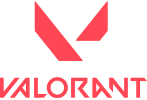

Valorant
Valorant é um jogo eletrônico multijogador gratuito para jogar de tiro em primeira pessoa desenvolvido e publicado pela Riot Games. É o primeiro jogo do gênero desenvolvido pela empresa,[³] sendo anunciado pela primeira vez com o codinome Project A em outubro de 2019, em um evento de comemoração de 10 anos de League of Legends.[⁴] Foi lançado em 2 de junho de 2020 para Microsoft Windows
Jogabilidade
Duas equipes de cinco jogam uma contra a outra, e os jogadores assumem o papel de "agentes" com habilidades únicas. No modo de jogo principal, a equipe atacante tem uma bomba, chamada Spike, que eles precisam plantar em um local. Se a equipe atacante proteger com sucesso a bomba e ela detonar, eles ganharão um ponto. Se a equipe defensora desarmar com sucesso a bomba ou o cronômetro de 100 segundos da rodada expirar, a equipe defensora receberá um ponto. Eliminar todos os membros da equipe adversária também ganha uma rodada. A primeira equipe a vencer o melhor de 24 rodadas vence a partida.[³] O jogo também promove um servidor com tick rate de 128, que garante uma jogabilidade suave e baixo ping com uma expansão global de data centers.
Desenvolvimento
Valorant foi desenvolvido e publicado pela Riot Games, o estúdio por trás de League of Legends.[⁵][⁶] O desenvolvimento começou em 2014, dentro de sua divisão de pesquisa e desenvolvimento.[⁷] Joe Ziegler, diretor de Valorant, é creditado com a ideia inicial de Valorant enquanto formula jogos em potencial com outros desenvolvedores da Riot.[⁷] David Nottingham é o diretor criativo de Valorant.[⁷] Trevor Romleski, ex-projetista de League of Legends e Salvatore Garozzo, ex-jogador profissional e projetista de mapas para Counter-Strike: Global Offensive são os projetistas de Valorant. Moby Francke, ex-desenvolvedor da Valve, que foi projetista de arte e personagens para Half-Life 2 e Team Fortress 2, é o diretor de arte.[⁸][⁹]
A Riot optou por desenvolver o Valorant usando o Unreal Engine 4, no qual a equipe de desenvolvimento disse que permitiria que ele se concentrasse em jogabilidade e otimizações, em vez de gastar tempo em sistemas principais.[13] Para atingir a meta de uma barreira de
mais baixa para que mais pessoas pudessem jogar Valorant, a equipe estabeleceu requisitos mínimos e recomendações de hardware notavelmente baixos para o jogo. Para atingir 30 quadros por segundo com esses pequenos requisitos, a equipe de engenharia do jogo, liderada por Marcus Reid, que trabalhou anteriormente no Gears of War 4, teve que fazer várias modificações no motor do jogo. Essas modificações incluíram a edição do renderizador usando o caminho de renderização móvel do mecanismo como base, ou a reformulação dos sistemas de iluminação do jogo para se adequar à iluminação estática que os jogos de tiro táticos geralmente exigem, a fim de não interferir na jogabilidade.[14] Os fundamentos modernos da Unreal também ajudaram a resolver muitos dos problemas que a Riot se propôs a resolver de outros jogos do gênero, e modificações adicionais ajudaram a atender ao outro objetivo do jogo de criar um ambiente competitivo adequado, incluindo a otimização do desempenho do servidor, desativando as animações de personagens em situações que não sejam de combate e removendo avaliações desnecessárias no processo de registro.[15][16][17] Durante o desenvolvimento, a Riot Games prometeu trabalhar para um ping de menos de 35 milissegundos para pelo menos 70% dos jogadores do jogo. Para conseguir isso, a Riot prometeu servidores de 128 de tick rate na maioria das grandes cidades do mundo ou perto delas, além de trabalhar com provedores de serviços de internet para configurar conexões dedicadas a esses servidores. Devido ao aumento do tráfego de internet durante a pandemia da COVID-19, a Riot teve problemas para otimizar as conexões e fazer o ping em seus níveis prometidos.[18]
Lançamento
Valorant foi provocado pela primeira vez sob o título Project A em outubro de 2019.[19] Foi anunciado oficialmente em 1º de março de 2020, com um vídeo de jogabilidade no YouTube chamado "The Round".[20][21][22] A versão beta fechada do jogo foi lançada em 7 de abril de 2020 nos Estados Unidos, Canadá, Europa, Rússia e Turquia;[19] no Brasil e na Coreia do Sul, a versão beta foi lançada em 5 de maio.[23][24] Valorant foi lançado oficialmente em 2 de junho de 2020 para maioria das regiões do mundo através de etapas por cada localidade e seus fusos horários. Começou pela Coreia do Sul, Japão e maior parte da região Ásia-Pacífico. Logo após, chegou a vez dos servidores da Europa, Turquia, Oriente Médio, Norte da África e países da CEI. Pouco depois, o Brasil, América do Norte e América Latina viram o jogo ser disponibilizado. Até o momento, Valorant está disponível exclusivamente para a plataforma Microsoft Windows.[25][26]
Recepção
Valorant foi comparado ao Counter-Strike: Global Offensive da Valve, com ambos os jogos tendo duas equipes de cinco jogadores tentando plantar uma bomba, e ao Overwatch da Blizzard Entertainment, já que ambos os jogos têm várias classes e personagens atendendo a vários estilos de jogo.[32]
Austen Goslin, da Polygon, elogiou o beta de Valorant, descrevendo-o como refinado e "um dos jogos de tiro tático mais divertidos que já joguei".[33] No primeiro dia de seu lançamento beta, o Valorant acumulou o segundo maior número de espectadores simultâneos para qualquer jogo na Twitch, com 1,73 milhão de espectadores sintonizados em dezenas de transmissões. Apenas outro título da Riot Games, League of Legends, teve mais espectadores simultâneos, quando 1,74 milhão assistiram à final do Campeonato Mundial de 2019.[34]
Valorant recebeu críticas por seu sistema de comunicação de voz tóxico e dominado por homens. Emily Rand, da ESPN, falou sobre sua experiência negativa jogando em times que usam a função de comunicação por voz como mulher. Rand "recusa-se terminantemente a usá-lo" quando não está brincando com seus amigos.[35] Jordon Oloman, do The Guardian, explica como "as maçãs podres entre os jogadores de Valorant esperam um nível absurdo de perfeição, e as críticas resultante do bate-papo por voz dificilmente são construtivas".[36]
Foi indicado para Melhor Jogo de Esports, Melhor Multijogador e Melhor Suporte à Comunidade no The Game Awards 2020.[37] Venceu como Melhor Jogo de Esports no The Game Awards 2022.[38]
Sistema anti-trapaça
O jogo foi criticado por seu sistema anti-trapaça Vanguard, já que foi revelado que ele roda em um driver de kernel, que permite o acesso ao sistema do computador. O OSNews expressou preocupação de que a Riot Games e seu proprietário, o conglomerado de tecnologia chinês Tencent, pudessem espionar os jogadores e que o driver do kernel pudesse ser potencialmente explorado por terceiros.[39] No entanto, a Riot Games afirmou que o driver não envia nenhuma informação de volta para eles e lançou um programa de recompensas de bugs para oferecer recompensas por relatórios que demonstram vulnerabilidades com o software.[40][41] A recompensa recompensará os hackers de chapéu branco entre US$ 25.000 e US$ 100.000 por relatórios sobre suas vulnerabilidades, com o pagamento baseado na gravidade da exploração.[42] Erros de jogabilidade não se qualificam para esta recompensa.[43]
Valorant não será executado no Windows 11 se o sistema não tiver um criptoprocessador compatível com Trusted Platform Module (TPM) 2.0 e inicialização segura UEFI habilitada, conforme exigido pelos requisitos mínimos de sistema da Microsoft para o sistema operacional.[44]
Andamento
Até janeiro de 2022, o jogo apresentava quatro episódios, incluindo 18 agentes (personagens)[45] e 7 mapas.[46] Em termos de jogabilidade, durante a sua experiência nas partidas, é possível adquirir 18 armamentos diferentes. Depois de seu lançamento oficial, três novos modos de jogo foram adicionados, a Disputa de Spike, o Mata-Mata e a Replicação. O jogo conta com uma mecânica de passe de batalha que permite o jogador colecionar até 50 itens através da experiência obtida ao jogar partidas.[47]
O jogo também conta com um ecossistema competitivo, com campeonatos, equipes e jogadores profissionais ao redor do mundo. A Riot Games organiza os principais eventos, que são aderidos a sua turnê global, o Valorant Champions Tour.[48] A desenvolvedora também ajuda a organizar, em parceria com outras empresas, uma série de competições chamada de Valorant Game Changers, que contribui para a inclusão de mulheres e pessoas de gêneros marginalizados ao cenário profissional.[49][50]
Referências
| Valorant | |
|  | |
| Desenvolvedora(s) | Riot Games |
| Publicadora(s) | Riot Games |
| Diretor(es) | David Nottingham Joe Ziegler[¹] |
| Produtor(es) | Anna Donlon John Goscicki |
| Projetista(s) | Trevor Romleski Salvatore Garozzo |
| Programador(es) | Paul Chamberlain Dave Heironymus David Straily |
| Artista(s) | Moby Francke |
| Compositor(es) | Jesse Harlin[²] |
| Motor | Unreal Engine 4 |
| Plataforma(s) | Windows |
| Lançamento | 2 de junho de 2020 |
| Gênero(s) |
Tiro em primeira pessoa Tiro tático |
| Modos de jogo | Multijogador |